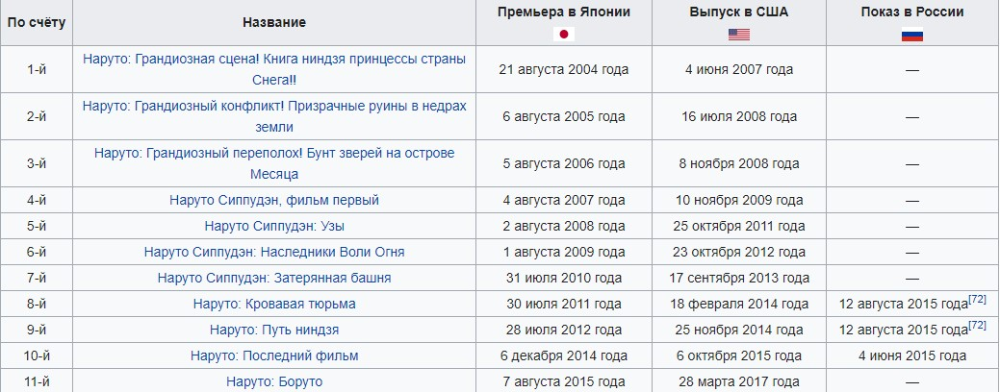
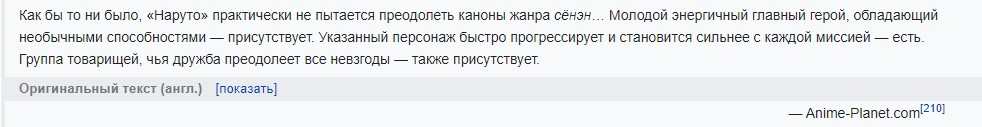

«Наруто» (яп. NARUTO - ナルト -) — сёнэн-манга Масаси Кисимото, рассказывающая о жизни шумного и непоседливого ниндзя-подростка Наруто Удзумаки, мечтающего достичь всеобщего признания и стать Хокагэ — главой своего селения и сильнейшим ниндзя.
Манга выпускалась с 21 сентября 1999 года по 10 ноября 2014 года издательством Shueisha в журнале Weekly Shonen Jump. Объединена в 72 танкобона..
По манге были созданы два аниме-сериала от компаний Aniplex и Studio Pierrot.
С момента начала трансляции в эфир вышло свыше 700 серий. В аниме-адаптацию манги входят: два аниме-сериала, одиннадцать анимационных фильмов и восемь OVA. На основе манги и аниме были созданы также видеоигры, романы, ранобэ и коллекционная карточная игра.
Манга и аниме оказались очень популярны как в Японии, так и за её пределами. На момент выхода 72-го тома, продажи которого составили 1 204 000 экземпляров, стало известно, что суммарные продажи томов превысили 205 миллионов экземпляров. В США манга «Наруто», лицензированная издательством Viz Media, регулярно попадает в списки бестселлеров, а в 2006 году её продажи составили почти 10 % всех продаж манги в этой стране. В России права на издание и распространение манги принадлежат компаниям «Эксмо» и «Комикс-Арт». Распространением аниме на территории СНГ занималась «МегаСистем».

Действие всей серии «Наруто» разворачивается в вымышленном мире, социально-политической структурой напоминающем феодальную Японию. Небольшие по размеру государства в нём действуют и развиваются как самостоятельные единицы, управляемые феодалами-даймё. Государства имеют в своём распоряжении скрытые деревни (яп. 隠れ里 какурэдзато), поселения ниндзя, во главе которых стоит независимый правитель — Кагэ. Ниндзя используются в качестве военной силы, а также участвуют в экономической жизни государства, выполняя оплачиваемые миссии — от прополки огородов до вылазок на вражескую территорию. Уровень развития технологий в мире «Наруто» весьма противоречив: с одной стороны, в распоряжении героев имеются современные камеры наблюдения и передатчики, с другой — прогресс практически не затрагивает военную сферу, где полностью отсутствует огнестрельное оружие и боевые машины, намеренно исключённые автором из повествования. В отсутствие достижений военной промышленности персонажи полагаются на сюрикэны, кунаи, мечи и собственные специальные способности, которые включают использование чакры — магической энергии, равнозначной энергии ци, и жестов для её контроля — печатей. Использование чакры подчиняется строгим правилам, которые Кисимото ввёл для того, чтобы иметь возможность легко объяснять повороты сюжета. Автор высказывал опасения, что чакра и складывание печатей, основанных на заимствованных из Китая знаках зодиака, делают мангу «слишком японской», однако сам он доволен ею.
За 12 лет до начала событий, излагаемых в манге, демон-лис напал на Деревню, скрытую в листве (яп. 木ノ葉隠れの里 Конохагакурэ но сато, или просто Коноха). Для спасения Конохи глава селения, Четвёртый Хокагэ, жертвует своей жизнью и запечатывает демона-лиса внутри своего новорождённого сына Наруто.Хокагэ желал, чтобы люди считали Наруто героем, поскольку Наруто сдерживает демона-лиса. Однако жители деревни восприняли Наруто как демона во плоти и возненавидели его. После инцидента Хокагэ запрещает говорить об атаке лиса, и Наруто узнаёт о своей необычности лишь случайно, годы спустя.Манга делится на две части.
В начале первой части Наруто с трудом завершает обучение и получает звание гэнина — начинающего ниндзя. Он и двое его одноклассников, Саскэ Утиха и Сакура Харуно, образуют команду под началом опытного сэнсэя Какаси Хатакэ. По мере развития сюжета Наруто находит новых друзей среди жителей деревни и овладевает новыми способностями, считая их необходимыми для того, чтобы в будущем исполнить свою мечту — стать Хокагэ. Вскоре Коноха подвергается атаке: беглый ниндзя и разыскиваемый преступник Оротимару вместе со своими приспешниками нападает на селение, убивая его главу — Третьего Хокагэ. Будучи в состоянии меняться телами с другими людьми, Оротимару желает заполучить тело Саскэ Утихи, считая его наследственные способности подходящими для себя, так как Саскэ является представителем клана Утиха, наиболее одарённого среди ниндзя. Саскэ добровольно уходит к Оротимару, полагая, что тот даст ему возможность стать сильнее и отомстить своему старшему брату Итати. До начала событий манги Итати уничтожил весь клан Утиха за исключением Саскэ, для которого месть превратилась в смысл жизни. Наруто, желая вернуть ушедшего Саскэ, покидает Коноху и посвящает себя тренировкам. Он занимается с легендарным ниндзя Дзирайей, бывшим товарищем Оротимару, чтобы подготовиться к следующей встрече и возможной битве с Саскэ.
Вторая часть, начинающаяся с 28 тома манги [13], описывает события, происходящие через два с половиной года после первой. После тренировок с Дзирайей Наруто возвращается в Деревню Скрытой Листвы и воссоединяется с повзрослевшими друзьями. Команда № 7, ранее состоявшая из Наруто, Саскэ и Сакуры, переформировывается. Теперь она называется «Команда Какаси», а место Саскэ в ней занимает другой молодой ниндзя — Сай. Ведущую роль противников Наруто и его друзей занимает организация «Акацуки», члены которой стремятся захватить всех хвостатых демонов, включая девятихвостого, заточённого внутри Наруто. Тем временем Саскэ Утиха, считая дальнейшее обучение у Оротимару бессмысленным, предаёт его и убивает. Отыскав своего старшего брата, чтобы отомстить за уничтожение клана, вступает с ним в бой, во время которого Итати неожиданно падает замертво. После этого лидер Акацуки, Тоби, сообщает Саскэ правду о том, что убийство клана было поручено Итати непосредственно руководством Деревни Скрытой Листвы в связи с планированием ими мятежа. Обозлённый этим открытием, Саскэ присоединяется к Акацуки с целью уничтожить Коноху. Тем временем по приказу Тоби члены Акацуки атакуют деревню Скрытой Листвы. Ценой больших усилий жителям Конохи удаётся отбить нападение, однако сама деревня оказывается практически полностью разрушена. На совете Кагэ — лидеров крупнейших селений ниндзя — Тоби заявляет, что собирает хвостатых демонов ради воссоздания десятихвостого бидзю и создания могущественной иллюзии, способной контролировать человечество. Когда руководители других селений отказываются помогать Тоби, он объявляет о начале Четвёртой мировой войны ниндзя. В ответ на это пять крупнейших стран создают альянс, во главе которого становится Райкагэ, и объединённую армию синоби, главнокомандующим которой становится Кадзэкагэ Гаара[14]. Начинаются бои между сторонами: на стороне Акацуки сражаются многочисленные клоны Дзэцу и призванные бывшим союзником Оротимару Кабуто Якуси умершие ниндзя, а на стороне альянса — синоби пяти стран. На второй день войны Дзэцу возрождает Кагую Оцуцуки, прародительницу искусства синоби, когда-то сорвавшую с древа чакры плод и давшую его людям. Ныне же она хочет вернуть чакру себе, для чего ранее «Акацуки» и собирали хвостатых зверей. Команде Какаси удаётся победить Кагую и запечатать её, а Наруто сражается с Саскэ, и тот признаёт поражение. В последней главе манги показана жизнь Конохи спустя десятилетие.
В 1995 году Кисимото получил «Hop Step Award» (яп. ホップ☆ステップ賞 Хоппу сутэппу сё:), премию журнала Shonen Jump для молодых авторов, но в течение нескольких последующих лет его идеи для будущих работ отклонялись редакцией журнала. В конце концов он решил нарисовать историю о своём любимом блюде — рамэне. «Первоначальная версия манги была целиком посвящена секретным ингредиентам лапши, но после „небольшой“ редакции она превратилась в „Наруто“», — рассказал Кисимото. Под таким названием отдельная короткая манга Кисимото была опубликована в журнале Akamaru Jump в августе 1997 года. По сюжету этой ранней работы, девять друзей победили девятихвостого лиса-демона, а единственный выживший из них теперь присматривает за сыном лиса — мальчиком по имени Наруто Удзумаки. Ровесники игнорируют Наруто, он отвечает им тем же и мстит за обиды, своими жестокими выходками ещё больше отталкивая людей. Его наставник, видя, что у Наруто нет друзей и понимая их важность для ребёнка, даёт ему задание — привести одного друга, которому Наруто может довериться. Тот бесцельно бродит по городу в поисках потенциальных друзей и, случайно встретив пьяного художника Куроду, отводит его домой. В мастерской Куроды его ассистент Такаси Такано показывает Наруто картину, которую реставрирует Курода в данный момент, — «Символ» знаменитого мастера Сабуро. Все настолько опасаются похищения картины из мастерской, что даже приставляют к ней полицейского. Однако ночью ассистента Такаси убивают, а картину крадут. Подозрение падает на Наруто. Тот уговаривает Куроду ему довериться, уверяет, что не крал «Символ», и обещает найти настоящего преступника. Наруто расследует преступление и заходит в квартиру полицейского, охранявшего картину. Там он чувствует запах полотна (нюх его куда острее, чем у обычных людей) и раскрывает преступный заговор защитников правосудия. Курода становится первым другом Наруто. Мир этой короткой манги больше похож на современный, чем в поздней версии «Наруто», — люди одеты в современную одежду, ездят на автомобилях, полицейские используют огнестрельное оружие. Единственные, кто применяют техники ниндзя, — сам Наруто Удзумаки и его наставник, воин, выживший после битвы с девятихвостым демоном. Результаты опроса среди читателей журнала показали, что история была встречена с очень большим интересом, но сам Кисимото остался недоволен работой, считая рисунок никуда не годным, а сюжет — донельзя запутанным. В то время он работал над мангой Karakuri (яп. «Механизм»), которая и завоевала в своё время «Hop Step Award». Кисимото сделал большое количество набросков для Karakuri, но так и не был ими удовлетворён, поэтому решил заняться новым проектом, что в конечном итоге вылилось в создание многотомной версии «Наруто». Манга «Наруто» стала первой крупной работой Масаси Кисимото. В своих интервью автор нередко рассказывал о процессе создания манги. Например, окружающая обстановка в мире «Наруто», по его словам, была придумана спонтанно, без долгих размышлений. Тем не менее автор признавал, что при рисовании деревни Конохи, одного из основных мест действия, он брал за образец ландшафт своей родной префектуры Окаяма в Японии. В процессе создания персонажей Кисимото в поисках вдохновения обращался к разнообразной манге для юношей (сёнэн), однако старался, чтобы его герои были по возможности непохожи на других. Разделение на команды было сделано специально, чтобы каждый отряд наделить уникальными свойствами. Кисимото планировал каждому члену отряда придумать собственные уникальные таланты и уязвимые стороны. Что же касается завершения манги, то Кисимото ещё в 2006 году заявлял, что у него есть мысли по поводу последней главы, включая сюжет и текст. Автор, однако, замечал, что на завершение может уйти много времени, поскольку есть ещё много проблем, которые нужно разрешить в ходе повествования.
Первая глава манги была опубликована в сентябрьском номере журнала «Shonen Jump» в 1999 году. Начальные 238 глав составляют первую часть и рассказывают о начале приключений Наруто; главы с 239-й по 244-ю известны как гайдэн и повествуют о прошлом персонажа Какаси Хатакэ; все последующие главы относятся ко второй части. В США «Наруто» с 2003 года выпускает издательство Viz Media, причём одно время манга публиковалась в ускоренном темпе, чтобы догнать японских издателей, последний 72 том вышел в продажу 6 октября 2015 года. По состоянию на февраль 2015 года в Японии опубликовано 72 танкобона манги, из них 27 составляют первую часть сюжета, тогда, как оставшиеся 45 — вторую часть. Первый танкобон был издан 3 марта 2000 года, а последний — 4 февраля 2015 года. Кроме того, издательство Shueisha выпустило несколько томов ани-манги, основанной на полнометражных анимационных фильмах, и разместило на своём сайте Shueisha Manga Capsule вариант «Наруто», доступный для скачивания на мобильный телефон.
«Наруто» пользуется большим коммерческим успехом как в Японии, так и в других странах мира. На родине по состоянию на декабрь 2008 года было продано более 89 млн копий манги, а в 2008 году более 1 млн одного только 43-го тома, благодаря чему «Наруто» заняла девятое место в списке самой продаваемой манги Японии. Тома 41, 42 и 44 также попали в список бестселлеров, хотя и разошлись меньшим тиражом. В 2008 году общее количество проданных в Японии экземпляров составило 4 261 054 копий, а манга стала второй в списке бестселлеров. Не менее успешным оказался 2009 год: за первые полгода «Наруто» занял 3-е место в списке самой продаваемой в Японии манги, 45-й том разошёлся тиражом более 1 млн копий, а 46-й том — более 850 тыс. копий. В апреле 2010 года компанией Shueisha было сделано заявление, согласно которому продано свыше 100 млн копий «Наруто», таким образом, эта манга оказалась на пятом месте в списке наиболее успешных изданий компании за всю историю — после Kochikame, «Жемчуга дракона», Slam Dunk и One Piece. В 2012 году «Наруто» стала третьей самой продаваемой мангой Японии, в 2013 году заняла пятое место в рейтинге.В США манга вошла в число бестселлеров наряду с такими книгами, как «Мемуары гейши» и «Код да Винчи». Десять процентов всей проданной в 2006 году манги пришлись на «Наруто». Седьмой том, изданный Viz Media в 2006 году, стал первой мангой в истории, получившей премию Quill Awards как «Лучший графический роман». В перечне книг общенациональной американской газеты «USA Today» 11-й том «Наруто» долгое время занимал место самой продаваемой манги в списке, пока его не опередил 28-й том, поднявшийся на 17-ю строчку в первую неделю после публикации в марте 2008 года и обративший на себя внимание обозревателей очень быстрым ростом продаж. Поисковый запрос «Naruto» в системе Yahoo! занял четвёртое место в рейтинге самых популярных поисковых слов 2007 года и седьмое место — в 2008 году. Наряду с другими наиболее популярными современными произведениями, «Наруто» содержится в коллекции Киотского международного музея манги.
В России распространением «Наруто» с 2008 по 2013 год занималось издательство «Эксмо» в сотрудничестве с компанией «Комикс-Арт». По состоянию на сентябрь 2013 года выпущено 20 томов русской версии манги. «Эксмо» издаёт мангу большим тиражом, как книги популярных писателей: тираж «Наруто» составил 25 тысяч экземпляров. Российскую печатную версию критиковали за выбор шрифтов, а также за ошибки в переводе имён и диалогов (в частности, в первом томе имя героя Конохамару было заменено на «Коноха»). «Отнюдь не лучший выбор, когда без лупы нельзя отличить „А“ от „Д“ и „Ц“ от „И“», — пишет об издании интернет-ресурс «АниМаг». Однако, по мнению обозревателя данного сайта, эти ошибки незначительны по сравнению с «самим фактом выпуска „Наруто“ на бумаге».
Премьера аниме-экранизации «Наруто» в Японии состоялась 3 октября 2002 года на телеканале TV Tokyo. Режиссёром её стал Хаято Датэ, а продюсерами выступили компании Studio Pierrot и TV Tokyo. Сюжет экранизации практически идентичен сюжету оригинального произведения. Последняя, 220-я серия была показана 8 февраля 2007 года. Первые 135 серий являются адаптацией первых 27 томов манги, тогда как остальные 80 — филлеры. Аниме-экранизация оказалась такой же успешной, как и оригинальная манга. В 2003 году «Наруто» занял 10-е место в двадцатке лучших аниме-сериалов по версии японского журнала «Animage», а среди 20-ти лучших женских персонажей фигурировали две героини «Наруто» — Хината Хюга и Сакура Харуно. Годом позже сериал в этом рейтинге опустился на одну позицию, но при этом одна из его комедийных серий, посвящённая попыткам главных героев узнать, что именно Какаси Хатакэ скрывает под маской на лице, заняла 20-е место в списке наиболее интересных серий. В октябре 2006 года среди телезрителей канала TV Asahi проводился опрос с целью выявить 100 лучших аниме, в котором «Наруто» занял 17-е место. Сериал получил премию на третьем фестивале USTv Awards в Университете Санто-Томас в Маниле (Филиппины) в 2007 году, а в 2009 году снова оказался в числе победителей, на этот раз в категории «Выбор студентов» университета. В США аниме «Наруто» стало успешным, как и манга. Обозреватель газеты «The Washington Times» даже назвал его сенсацией в мире американской массовой культуры[52]. Первый DVD-бокс с тринадцатью сериями был номинирован на премию American Anime Awards за лучший дизайн. Он же стал третьим в рейтинге самых продаваемых аниме 2008 года, уступив место лишь Batman: Gotham Knight и Dragon Ball Z, а в 2009 году ему удалось подняться на вторую строчку.На территории России сериал был частично показан по каналу Jetix (01-25, 27-104 серии). В версии этого телеканала перевод на русский производился не с оригинальной японской версии, а с американской, а кроме того, там присутствовала цензура, которую произвёл сам телеканал. Её уровень был назван обозревателями «совершенно абсурдным», а количество правок позволило сделать заявление о том, что редакторы фактически «искромсали каждую серию». В качестве примеров приводилось вырезание большей части боевых или кровавых сцен и даже редактирование диалогов персонажей, когда те разговаривали об оружии, например, о сюрикэнах. Пострадали сцены с сексуальным подтекстом и молодёжным юмором, достаточно часто встречающимся в манге, в частности, был вырезана сцена со случайным поцелуем Наруто Удзумаки и Саскэ Утихи. Эту версию «Наруто» в январе 2009 года приобрела для распространения на DVD компания «МегаСистем», купившая 01-25, 27-104 серии аниме. Первое лицензионное издание «Наруто» появилось в продаже 30 июля 2009 года. Японская версия в России доступна только в виде фэнсаба.
Наруто Сиппудэн (яп. NARUTO -ナルト- 疾風伝 Наруто Сиппу:дэн, букв. «Ураганные хроники Наруто», офиц. «Наруто: Ураганные хроники») — сиквел оригинального сериала «Наруто». Его сюжет продолжает экранизацию манги с 28-го тома и далее. Показ сериала начался 15 февраля 2007 года на телеканале TV Tokyo[46]. Начиная с 8 января 2009 года, канал ежемесячно потоково передаёт новые серии напрямую подписчикам. Каждая такая серия становится доступна через час после японской премьеры и снабжена английскими субтитрами[61]. Американская компания Viz Media распространяет эти же серии бесплатно, но через 7 дней после премьеры[62]. Свободно распространяемые серии имеют в среднем 160 000 просмотров в неделю[63]. Сериал несколько раз становился лидером по объёму зрительской аудитории, например, в апреле 2007 года и в сентябре 2008 года[64][65]. Коммерчески аниме также было успешным: DVD «Сиппудэна» неоднократно входили в число лидеров продаж[66][67].
По мотивам «Наруто» создано восемь OVA. В первой из них, получившей название «Поиски четырёхлистного алого клевера» (яп. 紅き四つ葉のクローバーを探せ Акаки ёцуба но куро:ба: о сагасэ), Наруто помогает Конохамару, внуку третьего хокагэ, отыскать четырёхлистный клевер, который по поверьям исполняет любое желание. Во второй, под названием «Отчаянная схватка в деревне Скрытого Водопада: я герой!» (яп. 滝隠れの死闘 オレが英雄だってばよ！ Такигакурэ но сито: — орэ га эйю: даттэбаё!), юные ниндзя под руководством Какаси Хатакэ сопровождают домой главу соседней деревни. Премьеры этих OVA состоялись на японских фестивалях Jump Festa 2003 и 2004 годов, проводимых журналом «Shonen Jump»; позднее первая и вторая OVA также были выпущены на DVD[68]. Третья, «Большой спортивный фестиваль Конохи» (яп. 木ノ葉の里の大運動会 Коноха но сато но дай ундо:кай), представляет собой десятиминутный мультфильм, насыщенный туалетным юмором. По сюжету, Наруто участвует в спортивных соревнованиях, на протяжении которых никак не может попасть в уборную, поскольку ему постоянно мешают его товарищи или собственные ошибки. Эта OVA примечательна также тем, что в ней хотя бы на несколько секунд появляются практически все персонажи серии, как погибшие, так и живые на момент выпуска мультфильма: в основном они представлены стоящими в гигантской очереди в туалет. «Большой спортивный фестиваль Конохи» вышел одновременно с первым анимационным фильмом, а в американском издании поставлялся с первым фильмом в коллекционном издании[69]. Четвёртая OVA, называемая «Наконец-то схватка: дзёнины против гэнинов, большой бойцовский турнир» (яп. ついに激突！上忍VS下忍！！無差別大乱戦大会開催！！ Цуйни гэкитоцу! Дзё:нин тай гэнин!! Мусабэцу дайрансэн тайкай кайсай!!), повествует о новом соревновании между ниндзя, организованном в Конохе. Диск с этой OVA входил в качестве бонуса в японское издание игры Naruto: Ultimate Ninja 3 на PlayStation 2[70]. Пятая OVA под названием «Пересечение дорог» (яп. ザ・クロスローズ Дза куросу ро:дзу, «The crossroads»), представленная осенью на фестивале Jump Super Anime Tour 2009, концентрируется на Саскэ Утихе во время его обучения вместе с товарищами в команде № 7[71]. Шестая OVA под названием «Джин и три желания», вышедшая вместе с седьмым фильмом, повествует о схватке гэнинов за овладение волшебной лампой. Седьмая OVA — это музыкальное дополнение к сериалу, повествующее о дружбе и вражде Наруто и Саскэ, а также о их будущей битве. Последняя, восьмая OVA рассказывает о битве Наруто и Конохамару на экзамене на звание тюнина, на котором присутствовал Гаара.
По мотивам «Наруто» было сделано 11 анимационных фильмов. Сюжет первых трёх разворачивается в рамках первой части сериала, тогда как оставшиеся основаны на Наруто Сиппудэн.

Музыкальные темы для аниме «Наруто» были созданы композитором Тосио Масудой. Первый диск под названием Naruto Original Soundtrack был выпущен 3 апреля 2003 года и содержал 27 треков из первого сезона аниме. Второй, Naruto Original Soundtrack II, вышел 18 марта 2004 года и состоял из 19 композиций. Третий, Naruto Original Soundtrack III, включающий в себя 23 трека, был выпущен 27 апреля 2005 года.Два диска, содержащие все начальные и завершающие темы из аниме, вышли 17 ноября 2004 года и 2 августа 2006 под названиями Naruto: Best Hit Collection и Naruto: Best Hit Collection II соответственно. Одна из закрывающих тем, композиция «Wind» исполнителя Акэбоси, в 2002 году заняла 10-е место в двадцатке лучших аниме-песен по версии журнала Animage, а год спустя начальная тема «Kanashimi wo Yasashisa ni» оказалась в этом списке на 11-м месте. Из всех композиций сериала были отобраны восемь и выпущены как Naruto in Rock -The Very Best Hit Collection Instrumental Version- 19 декабря 2007 года. Также свой саундтрек-альбом вышел и к каждому из трех полнометражных фильмов. Кроме того, были записаны различные аудио-постановки.Саундтрек к «Наруто Сиппудэн» был создан Ясухару Таканаси. Первый диск, Naruto Shippuuden Original Soundtrack, вышел 9 декабря 2007 года. CD Naruto All Stars был выпущен 23 июля 2008 года и состоит из ремиксов 10 песен оригинального сериала, исполненных его героями. К трём фильмам сиквела также были изданы саундтрек-альбомы.
Существует восемь романов (лайт-новел) авторства Масатоси Кусакабэ, выпущенных издательством Shueisha. Первый из них основан на четырёх начальных томах манги, остальные представляют собой адаптации анимационных фильмов по серии «Наруто». Два романа переведены на английский язык и опубликованы издательством Viz Media. Помимо переводов, Viz Media выпускает короткие повести авторства Трейси Уэст (англ. Tracey West), рассчитанные на детей 7-10 лет и являющиеся адаптациями манги[140]. На сентябрь 2009 года было выпущено 10 таких повестей, называющихся «Naruto Chapter Books»[141].
Издательство Shueisha выпустило два графических альбома и четыре энциклопедии, основанные на серии «Наруто». Альбомы содержат изображения героев первой и второй частей манги соответственно. В энциклопедиях по вымышленному миру присутствуют описания персонажей, их техник, а также наброски авторства Масаси Кисимото, причём первые три энциклопедии посвящены первой части манги, а последняя — второй. Кроме этого, существует книга-раскраска под названием «Paint Jump: Art of Naruto», показывающая, как автор манги рисует и раскрашивает своих героев[152], и три энциклопедии по аниме-сериалу, описывающие процесс создания серий и объясняющие особенности дизайна персонажей[153][154][155]. Эти энциклопедии, покрывающие серии с 1-й по 135-ю, переведены на английский язык издательством Viz Media[156][157][158].
Видеоигры по серии «Наруто» выпускались для различных консолей от таких производителей как Nintendo, Sony и Microsoft. Большая часть игр выходила только в Японии и представляет собой файтинги, в которых игрок, управляя одним из персонажей серии, должен победить другого персонажа, управляемого компьютером или вторым игроком — в зависимости от режима игры. Специальные приёмы у каждого героя свои, основанные на техниках, которые он использует в аниме и манге[167]. Самой первой игрой по серии «Наруто» стала Naruto: Konoha Ninpouchou, выпущенная 27 марта 2003 года для консоли WonderSwan Color[168]. Первыми играми, выпущенными за пределами Японии, являются серии Naruto: Gekitou Ninja Taisen и Naruto: Saikyou Ninja Daikesshu, также известные как Naruto: Clash of Ninja и Naruto: Ninja Council[169][170]. Первой игрой по мотивам «Наруто», созданной не в Японии, стала Naruto: Rise of a Ninja для платформы Xbox 360, разработанная компанией Ubisoft Montreal и выпущенная 30 октября 2007 года[171]. Существует её сиквел — Naruto: The Broken Bond[172].Clash of Ninja, Ninja Council, а также Naruto: Ultimate Ninja — наиболее крупные игровые линейки, насчитывающие более пяти игр. Три игры входят в серию Naruto: Path of the Ninja[173] и по две — в Naruto: Uzumaki Chronicles[174] и Naruto: Ninja Destiny на Nintendo DS[175]. Кроме того, персонажи «Наруто» фигурируют в игре Battle Stadium D.O.N., разработанной компанией Namco Bandai[176], а также в файтингах Jump Super Stars и Jump Ultimate Stars вместе с другими персонажами разнообразных манг журнала «Shonen Jump»[177].
Существует коллекционная карточная игра по вселенной «Наруто» под названием «Naruto Collectible Card Game» (яп. ナルト- カードゲーム Наруто ка:до гэ:му). Компания Bandai выпускает её в Японии с февраля 2003 года, по состоянию на сентябрь 2009 года было выпущено 17 наборов, причём последний вышел в 2006 году[178]. В Америке игра выпускается с апреля 2006 года[179], и на август 2009 года вышло 13 наборов[180]. В каждом из них содержится 4 заранее сформированных колоды по 50 карт[178]. Дополнительные карты поставляются в виде случайно подобранных наборов по 10 карт. В игре принимают участие два игрока, раскладывающие карты на игровом поле. Для счёта очерёдности ходов используется специальная фишка, а в качестве элемента случайности — монета (Ninja Blade Coin), которую подбрасывают для принятия решений. Чтобы победить, игроку нужно получить 10 «боевых наград» по ходу игры или заставить противника истощить свою колоду[181].
С 10 октября 2003 года на японском радио раз в неделю выходит передача «Oh! Naruto Nippon» (яп. オーNARUTOニッポン) продолжительностью полчаса[182] (в апреле 2007 года её название изменилось на «Naruto Radio Shippuu Jinrai» (яп. NARUTO Radio 疾風迅雷). Её ведущей является Дзюнко Такэути, сэйю, озвучивающая Наруто Удзумаки. Передача построена как диалог Такэути и какого-либо другого сэйю, принимающего участие в озвучивании персонажей аниме «Наруто». Для слушателей проводится конкурс: ведущие зачитывают их письма в эфире. За каждое прочтённое письмо слушатель получает очко; от количества очков зависит присваиваемое слушателю «звание», соответствующее рангам ниндзя в мире «Наруто»: обладатель одного очка становится «гэнином», десяти — «тюнином», тридцати — «дзёнином» и получает приглашение присутствовать в студии вместе с ведущими во время выхода передачи в эфир[182]. Записи радиопередач выпускаются на CD-дисках. На октябрь 2009 года вышел 21 диск с «Oh! Naruto Nippon»[183] и 8 — с «Shippuu Jinrai»[184].
Многие критики и обозреватели изложили в отзывах свои мнения о манге и аниме «Наруто». Так, рецензенты одобрительно отзывались о манге, отмечая её интенсивность и динамичность[185][186], а также сбалансированность сюжета, в котором органично переплетаются сцены боёв, тренировок, развитие характеров героев и комедийные элементы[187][188][189]. Дэб Аоки с сайта About.com сочла «Наруто» лучшей мангой 2007 года[190] и отдала ей первое место в списке «Топ-10 сёнэн-манги, которую вы обязаны прочесть»[191]. Авторы «The Anime Encyclopedia» отметили, что сюжет «Наруто» позволяет ввести в повествование большое количество персонажей, что в сочетании со сценами битв является залогом успеха манги, как ранее явилось залогом успеха таких работ, как «Жемчуг дракона» и «Ninja Hattori-kun».[192] По мнению писательницы Хелен Маккарти, основные темы манги — настойчивость, упорство, вера в себя и нежелание сдаваться.[193] Исследователь в области массовой культуры Лоуренс Рабин написал, что секрет популярности «Наруто» — в удачном сочетании динамичного боевика и истории о взрослении.[194] Он также назвал мангу историей о поиске себя и становлении связей с другими людьми.[195] Рабин исследовал и символику манги, в частности, счёл, что девятихвостый демон-лис внутри главного героя символизирует борьбу человека с самим собой в попытке сдержать отрицательные — разрушительные — эмоции.[196] По мнению других обозревателей, автору удалось хорошо передать чувства и эмоции персонажей[197], даже второстепенных, среди которых попадалось много интересных героев[198]. Ксения Аташева, обозреватель журнала «Мир фантастики» отнесла «Наруто», повествующего о самом шумном и веселом ниндзя деревни, к группе самых популярных сёнэн-сериалов[199].С выходом второй части манга, по словам критиков, стала более «взрослой» и серьёзной[200]; веб-ресурс IGN, в частности, назвал решение автора разом сделать своих героев на два года старше «умным ходом»[201]. Из недостатков был отмечен шаблонный сюжетный ход, заключающийся в том, что некий персонаж в силу обстоятельств остаётся одиноким, начинает считать себя никому не нужным и оказывается послушным оружием в руках какого-нибудь злодея, однако после единичного разговора с Наруто к этому одиночке вдруг возвращается уверенность в себе, и зачастую он из отрицательного персонажа превращается в положительного[202]. Настойчивость и упрямство главного героя тоже понравилось не всем: рецензент IGN Дэвид Смит отозвался о Наруто Удзумаки весьма нелестно, назвав его «тупым, как мешок молотков»[203], а колумнист британского журнала «Neo» счёл его «раздражающим», но при этом заметил, что сериал сам по себе вызывает едва ли не наркотическую зависимость[204]. Наруто Удзумаки — один из самых популярных персонажей для косплея.[205]В отношении рисунка мнения критиков разделились: одни сочли, что Кисимото — довольно посредственный художник[206], другие, как русский онлайн-журнал «АниМаг», отметили качественный стиль рисования и проработку деталей: «Магия, техники и умения ниндзя прорисованы особенно здорово. Им художник уделил очень большое внимание»[207]. Рецензенты веб-сайта Anime News Network считают, что Кисимото старается подражать стилю Акиры Ториямы, автора популярной манги для юношей (сёнэн) «Жемчуг дракона»[187], однако при этом замечают несовпадения во внешнем виде персонажей, выдающие неаккуратную работу многочисленных ассистентов[188]. В целом, критики сочли «Наруто» классической историей о взрослении главного героя[208], сёнэн-мангой, не отступающей от канонов своего жанра[203][209]. Англоязычный сайт Anime-Planet пишет:
Тем не менее рецензенты соглашаются с тем, что автор удачно сочетает все стандартные элементы сёнэн-манги[210]. Например, один из авторов онлайн-версии американского журнала «Otaku USA» отмечает, что Кисимото умеет неожиданно менять исход боя между персонажами и мастерски отображает типичную для сёнэн-манги «победу в последнюю минуту»[211].Аниме-сериал также получил достаточно много откликов. Подобно манге, он представляет собой классическое аниме для юношей, следующее традициям таких сериалов, как «Dragon Ball Z», «YuYu Hakusho» и «One Piece»[206][212][213], и не являет ничего нового или неожиданного в этом жанре[214][215]. Редактор сайта Associated Content рекомендует «Наруто» для детского просмотра в связи с его воспитательным эффектом. Наруто с друзьями, объясняет он, зачастую проходят разнообразные виды тренировок, постоянно принимая их за боевые задания и проверку их умения сражаться, а на деле тесты призваны выявлять куда более важные способности — способность к состраданию, командной работе, честность, навыки взаимодействия с людьми.[216] Другие критики отмечали притягательность этого аниме, подобную привлекательности «мусорной еды» (junk food)[217].Анимация, по словам рецензентов, выполнена на вполне достойном техническом уровне[212], которого достаточно, чтобы зритель не скучал во время просмотра, однако во всех других отношениях мало чем впечатляет[218]. Критике подверглась работа аниматоров с цветом: одна из обозревательниц осталась недовольна тем, как создатели аниме раскрашивали персонажей и окружающую обстановку[206]. Из очевидных недостатков аниме обозреватели отмечали его явную затянутость и монотонность[215][219]: аниматоры растягивали одну битву на несколько серий, причём особенно страдали бои ключевых персонажей[220][221]. Кроме того, показанные ранее эпизоды часто демонстрировались снова и снова, а флэшбэки (воспоминания персонажей) были излишне длительными и детальными[222]: журнал «АниМаг», например, упоминал о том, что «почти каждая серия начинается с пятиминутного повторения прошлого эпизода»[45]. Однако особенно негативные отзывы вызвало большое число филлерных серий[223], в течение которых сюжет никак не развивался[218]. Один из рецензентов недоумевал, как сериал вообще пережил столь огромное их количество[224]. Зато музыка, звучащая в сериале, заслужила всяческих похвал: рецензенты заявили, что саундтрек композитора Тосио Масуды способен слиться с любым анимационным произведением и создать нужное настроение[206], а замечательность его заключается в незаметности[217]. Как пишет один из критиков на сайте Anime News Network, покупать отдельный диск с музыкой аниме, возможно, и не стоит, но свою задачу — поддерживать напряжение — она выполняет[225]. Другие критики утверждают, что музыка всегда звучит «к месту»[45], и прекрасно дополняет как сцены боёв, так и комические эпизоды[210].И анимационные фильмы, и OVA (за исключением юмористического «Большого спортивного фестиваля») на фоне сериала оцениваются достаточно низко[226]. По мнению обозревателей, они выглядят довольно стандартно и предсказуемо, практически ничего не добавляют к сюжету аниме и характерам персонажей[227][228], однако при этом выполнены на неплохом техническом уровне[229]. Как выразился один из критиков англоязычного веб-сайта Mania.com, это «очень красиво сделанные филлерные истории»[230].